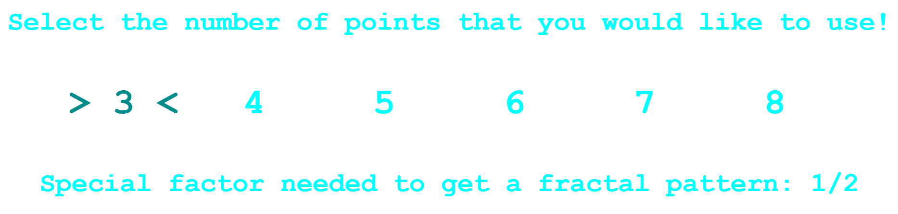
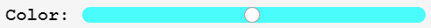

What is "The Chaos Game"?
The "Chaos Game" is a game in which multiple points are selected, along with an initial starting point.
Each selected point, excluding the initial start, is associated with a number. Then, a random number is
selected, and a new point is drawn from the starting point to the point which is associated with that
random number. How far the new point is from the selected point is determined by the formula, n / (n + 3),
where n is the number of points selected. This continues on, with the currently drawn point replacing the
starting position. After several thousand iterations, a fractal, or self-similar, pattern will be observable.
See the Numberphile video below to see our inspiration.
Gameplay
-
Number of Points Selection
Upon navigating to the game page. The user will be asked to select the initial number of points, 3 to 8, that will be used to create the image.
Note: The new button will allow the user to return here and change the number of initial points.
-
Special Factor
The special factor indicates the placement of the next point between the current point and one of the original association points chosen randomly. (see Choosing the Association Point)
- The special factor for 3pts is 1/2
- The special factor for 4pts is 4/7
- The special factor for 5pts is 5/8
- The special factor for 6pts is 6/9
- The special factor for 7pts is 7/10
- The special factor for 8pts is 8/11
For instance, in the example below there are 3 association points and a starting point. Every new point is placed 1/2 way between the current point and one of the 3 association points (A,B, or C) point
-
Randomly Choosing the Association Point

For our game the point is chosen randomly by a random number generator. The number generator produces a number 1 through 8. Each number is associated with a labeled point. For example, the number 0 is associated with point A.
Game Controls
Our version of this game will allow the user to select points on a board, undo and redo selected points, change the point color, select a new number of points to choose, reset the board, run the game, and control the speed of point insertion.
-
Point Selection
Click on the the game board to place an initial point
A pointer will appear on the board if the area is a valid spot for point placement.
-
Points
Indicates the number of points on the board. Once there are 3000 points placed on the the board, a celebration will occur
-
Speed Slider
Changes point production speed. Moving the slider to the left slows down point production. Moving the slider to the right speeds up point production.
-
Color Slider
Color ranges from red, orange, yellow, green, blue, indigo, violet, back to red
-
Refresh Button
Returns the user to the initial point selection screen and restarts the game
-
Run Button
Begins point production
-
Pause/Play Button
Pauses point production. Resumes point production
-
Refresh Button
Clears the board and restarts game without changing the number of initial points
-
Undo Button
Removes last point placed on the board. Once no points are placed on board the button is disabled
Redo Button
Replaces the point removed by the undo button
Initial Point Number and Fractal Image Produced
The fractal image produced is dependent on the number initial points placed. The starting point placement will have little effect on the image produced.
- 3 Points
- 4 Points
- 5 Points
- 6 Points
- 7 Points
- 8 Points
Importance of Fractals
Fractal images occur frequently in nature, so fractal images are useful for generating realistic plant graphics.